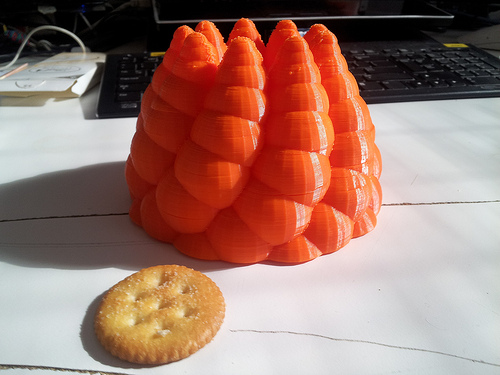

The maximum build size of the Makerbot Replicator...
March 29, 2012

The maximum build size of the Makerbot Replicator is a game changer - this baby is 15x15x10 cm (w x d x h). No, I’m not talking about the Ritz cracker.